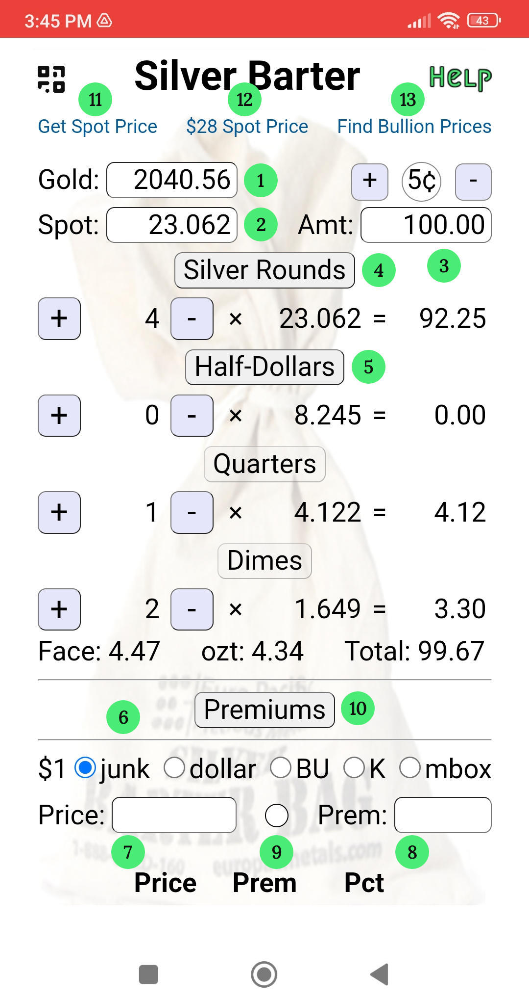

The Silver Barter web app has two sections to help with bartering for goods and calculating premiums when buying "junk" silver, gold and bullion.
1. Enter gold spot price here.
2. Enter silver spot price here.
3. Enter price of goods for sell that you want to barter for.
4. Toggle off "Silver Rounds" if you don't have any.
5. Toggle off "Half-Dollars" if you don't have any.
6. Select the type of silver that you want to calculate the premium on. Junk: Pre-65 half-dollars, quarters and dimes. $1 face value. Dollar: Morgans and Peace dollars. BU: Bullion 1-oz rounds & bars, Maples Leafs, American Eagles, etc. K: Kilo bars. mbox: Monster box (500 oz).
7. Enter the quoted prices for the selected precious metal. The premium (8) will be displayed, based on the spot price.
8. Enter the desired premium percent. The price (7) to pay will be displayed, based on the spot price.
9. Toggle premiums for gold instead of silver. The dot fills with gold.
10. Toggle "Price Prem Pct" table display.
11. The first time you click on this link, it takes you to www.goldapi.io. If you sign-up for a "free" api key and paste it into the Silver Spot Price input box ②, then the next time you click this link it will populate both the gold and silver spot price fields for you. The api key looks like "goldapi-xxxxxxxxxxxxx-io". You get 100 requests per month.
12. Sets silver spot price to $28 per oz.
Note: Quarters are worth $5 and dimes are worth $2!
13. A link to the "$100 Face-Value 90% Silver Coins" page on the "FindBullionPrices.com" website. Be careful buying the cheapest bag that it is not full of "Bent / Holed / Damaged / No date" coins.
Example 1: Enter 24.00 into "Spot" (2). Toggle off "Silver Rounds" and "Half-Dollars". Enter 27.00 into "Amt". 5 quarters and 3 dimes is worth $26.60 ($1.55 face) which is as close as you can get to $27 without going over. Maybe offer a "fiat" US dollar plus the 8 coins. Now hit the nickel button (5¢) at the top left. This rounds up the amount by a nickels' worth of silver (even though there is no such thing). Now it is 6 quarters and 1 dime ($1.60 face).
Example 2: First, make sure you select the "junk" radio button (6). Click on the link "Find Bullion Prices" at the top right. If you see "SD Bullion" on the list click that. Enter the spot price of silver you see at the top of the page on the SD Bullion's website into the "Spot" input field (2). For me that was 23.37. Notice the price of a $100 face bag of "junk" silver and enter it into the "Price" input field (7) divided by 100. For "junk" silver you enter the price of $1 face value. In my case the price of a $100 bag of "junk" silver was $1905.94 so I entered 19.06. It then displays 14.1% in the "Prem" field (8). That's a great price for silver. The "Rule of Thumb" is to try to buy your silver for less than 20% premium.
Example 3: First, make sure you select the "mbox" radio button (6). Go to the SD Bullion website and find a monster box of American Silver Eagles. Enter the spot price of silver you see at the top of the page on the SD Bullion's website into the "Spot" input field (2). For me that was 23.37. Notice the price of a monster box of American Silver Eagles and enter it into the "Price" input field (7). For me that was 14678.25 It then displays 25.6% in the "Prem" field (8). That's a good price for an American Silver Eagle sovereign coin. In April of '23 the premium was more than double that!
Fun Facts: A $1.40 face of 90% silver is 1 troy oz of silver (or exactly 1/.715 = 1.3986). When the spot price of silver is $28 (or exactly 20/.715 = 27.972) a "junk" quarter will be worth $5 and a "junk" dime will be worth $2. Then the "fiat" US dollar will become the new "junk" nickel, worth half as much as a dime!